The Many Kinds of Plurals
What's more intimidating than 3 forms of 'the'? The fact that there are nearly a dozen different ways to form plurals!
In English, we add '-s' to the end of the word when we want to talk about many of them.
“The schools.” “The cars.” “The blankets.”
Sure we have some oddballs, like child → children and goose → geese, but for the most part, it's simple.
Not so in German. That's why you'll see the plural listed along with the word in most German dictionaries - it's easiest to just learn them together!
Click on the buttons below to learn about the different ways of forming plural!
-e, -er Plurals
Many masculine and neuter nouns form plurals in these ways. Of course, there are always exceptions!
***Hint:Click on the pictures to see their plural forms!***
| 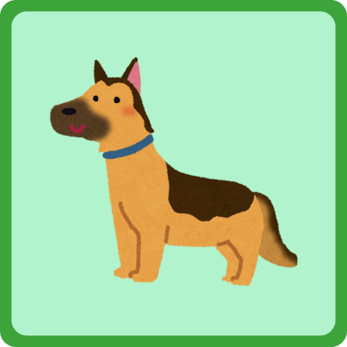
der Hund |
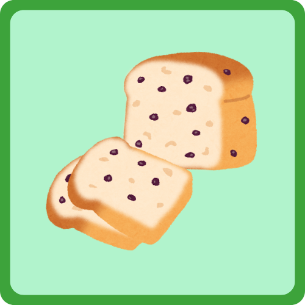
das Brot |
||
| 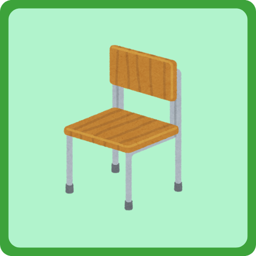
der Stuhl |
|||
| 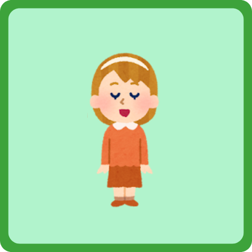
das Kind |
|||
| 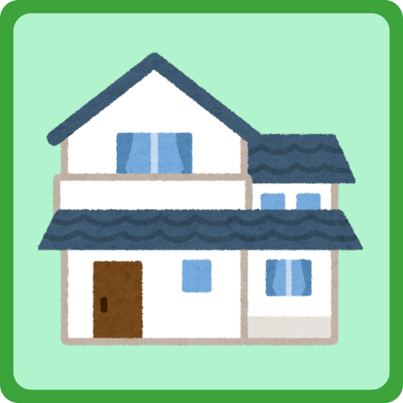
das Haus |
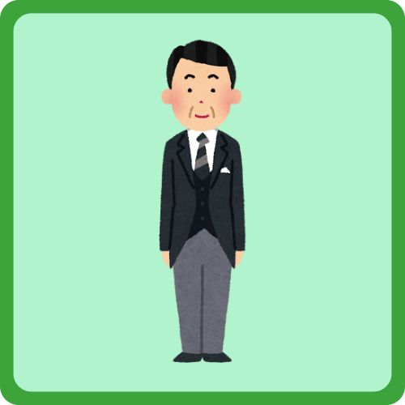
der Mann |
das Buch |
***Hint:Notice something that is the same between all these words?
No matter if their singular form uses "der", "die", or "das",
the plural always uses "die"!***
-n, -en, -nen Plurals
Many feminine nouns form plurals in these ways. Of course, there are always exceptions!
***Hint:Click on the pictures to see their plural forms!***
| 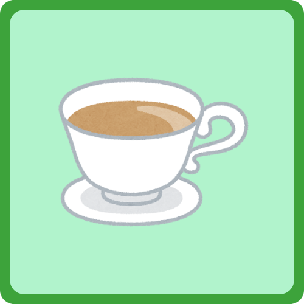
die Tasse |
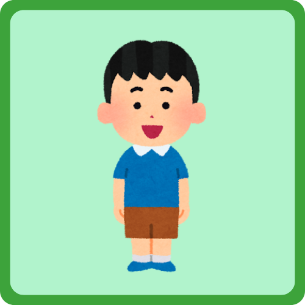
der Junge |
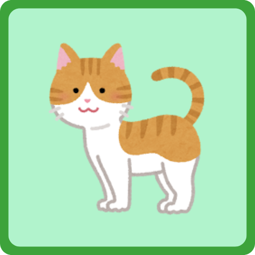
die Katze |
|
| 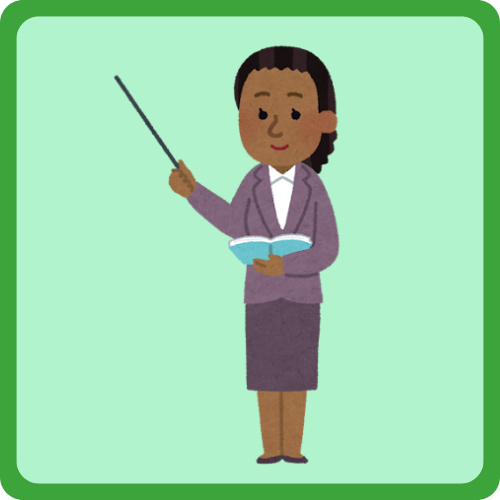
die Frau |
|||
| 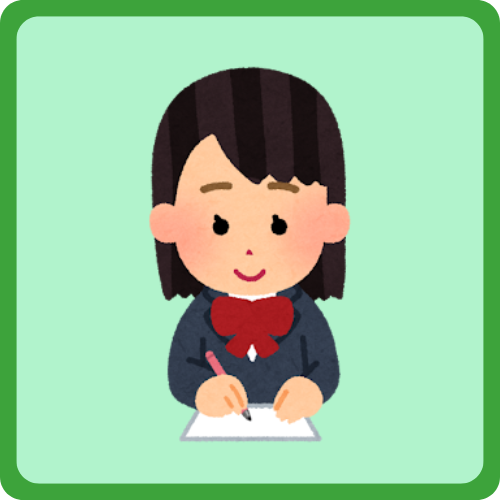
die Studentin |
Special Plurals
Some words in German form their plurals in other ways!
***Hint:Click on the pictures to see their plural forms!***
| 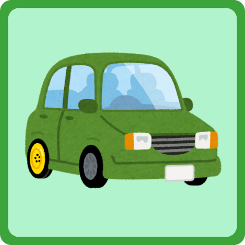
das Auto |
|
| 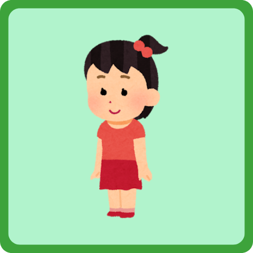
das Mädchen |
What are those little dot on the letters?
In English, we have the vowels 'a', 'e', 'i', 'o', and 'u'.
German has three more: 'ä', 'ö', and 'ü'.
They sound a bit different than the vowel under the dots. There's no English equivalent, but we can get pretty close!
***Hint:Click on the pictures to hear the umlaut sounds!***
sound like the 'ai' in 'air' |
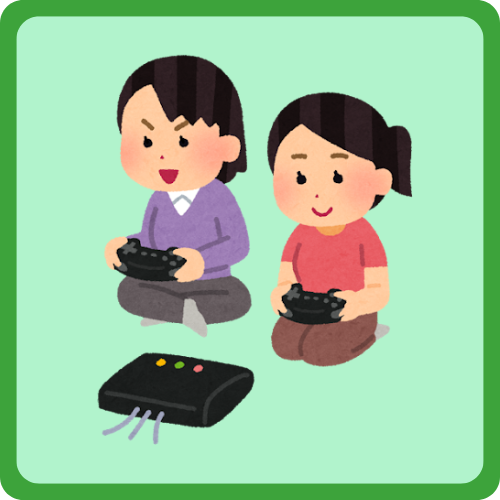 die Mädchen |
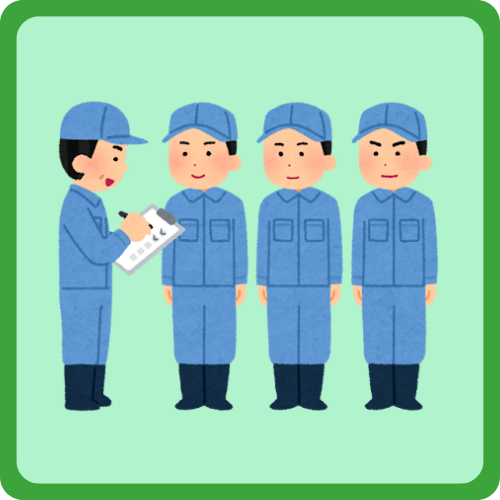 die Männer |
sound like the 'ur' in 'incur' |
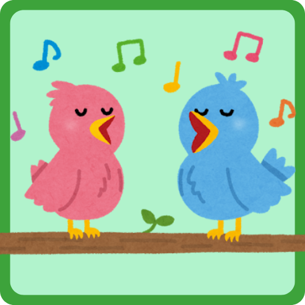 die Vögel |
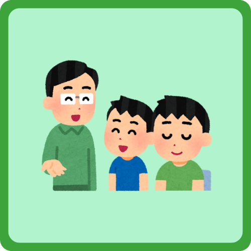 die Söhne |
sound like the 'oo' in 'kooky' |
die Bücher |
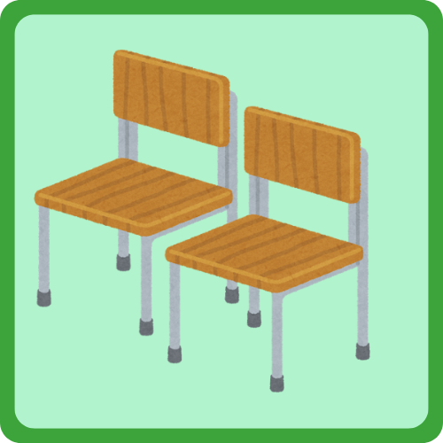 die Stühle |
You can find these letters on the German keyboard - or if you're on your phone, simply hold down the 'a', 'o', or 'u' button until the accent options come up!
Another option is to spell them with an 'e' afterwards. For example:
If you have a German last name with an extra 'e' thrown in, like "Mueller", it's very possible your ancestors had an umlaut there!
And just one more...
Many people think it looks like an uppercase 'B', but it's spelled like 'SS' when written in all caps! |
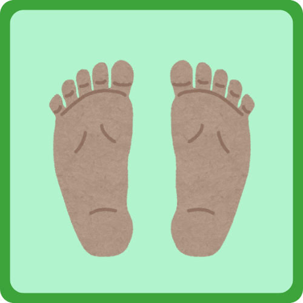 die Füße |